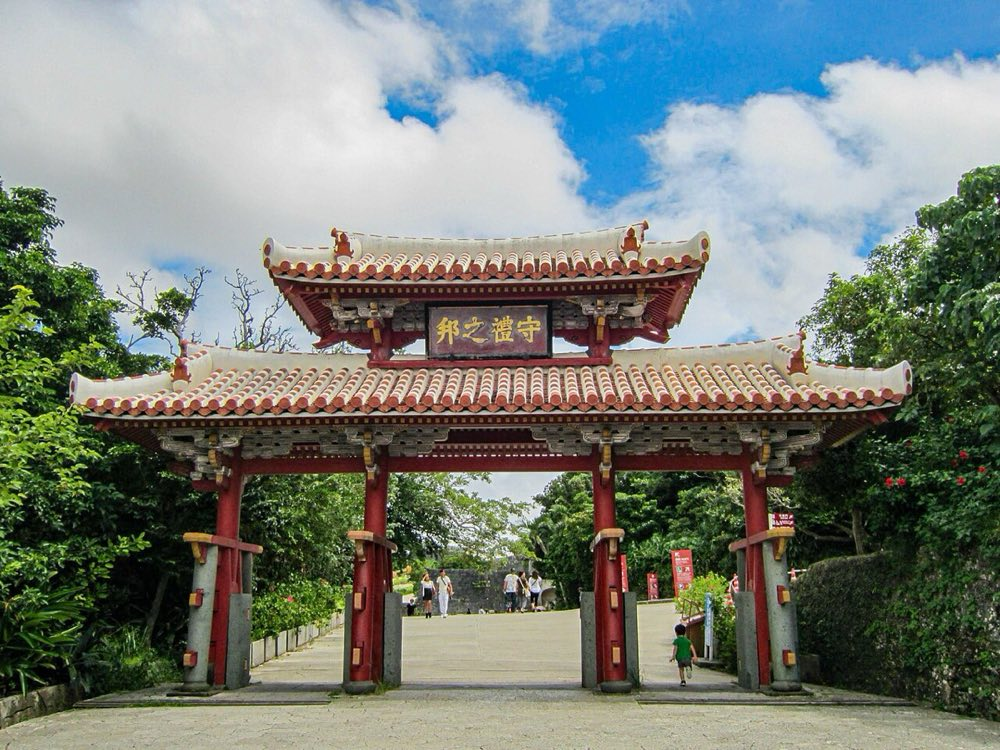
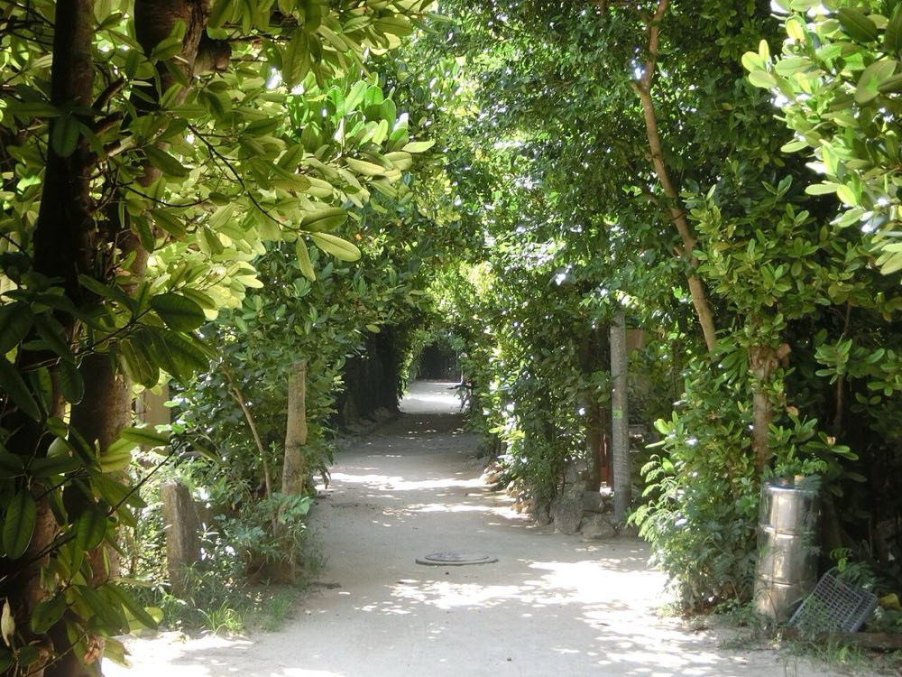

冬季冲绳
12 月在冲绳本岛住三晚或两晚：青之洞窟浮潜、美丽海水族馆和北部村落、刚重新开放的首里城正殿，还有从阿古猪到市场鲜鱼的冲绳美食。
- 天数
- 3–4 天
- 里程
- 约 220–260 公里
- 最佳季节
- 4–5 月、10–11 月
- 每人（不含机票）
- 约 CNY 2,100 起
2026 年 11 月为 12 月行程所做的调研。开放时间和价格会变动，出发前请再确认。车程和距离为估算，请以 Google 地图为准。
为什么选冬季冲绳
一趟短途就能兼顾大海和琉球王国：青之洞窟浮潜、美丽海的鲸鲨，还有 2019 年火灾后重建的首里城正殿。
12 月： 气温约 18–21°C，海水约 23–24°C，干燥但风大。穿潜水衣可以浮潜，能见度全年最好，但不是躺沙滩的天气。除 12 月 29 日至 1 月 3 日外都是淡季价格；座头鲸 12 月下旬开始出现。
最佳季节： 4 月至 5 月初、10 月至 11 月最好：海水温暖，天气稳定，台风较少。12 月至 3 月是凉季，适合看鲸（1–3 月）和浮潜（能见度高），但不适合躺沙滩。避开 5 月中旬至 6 月下旬梅雨、7–9 月台风和黄金周。
路线： 那霸机场 → 恩纳（2 晚）→ 本部与北部 → 那霸（1 晚）。自驾四天约 260 公里；三天只住恩纳，约 220 公里。
亮点
- 真荣田岬青之洞窟浮潜
- 美丽海水族馆、备濑福木林道和古宇利大桥
- 今归仁城迹（世界遗产）
- 重新开放的首里城正殿，加上县立博物馆的首里城特展
- 冲绳美食：阿古猪、木灰冲绳面、牧志市场代做的鲜鱼
须知
- 先查航班日期：有些飞那霸的直飞航线每周只有两三班。
- 北风可能导致青之洞窟停船，留一天机动。
- 县立博物馆周一休，佐喜真美术馆周二休。
两种玩法
💰 最划算：三天两晚，只住一处
- 住：两晚都住 Best Western Okinawa Onna Beach（每晚约 690 元），就在青之洞窟旁，不用换酒店。
- 玩：青之洞窟浮潜、美丽海水族馆、备濑福木林道和古宇利大桥，去机场途中参观首里城。
- 吃：岸本食堂的冲绳面、Sea Side Drive-in、牧志市场的鲜鱼。
- 每人约 2,100–3,050 元（不含机票）。
✨ 最佳体验：四天三晚
- 住：两晚住 Homm Stay Yumiha（9.4，带泳池的独栋别墅，每晚约 980 元，靠近真荣田岬）或 Kariyushi Resort EXES 恩纳（9.1，海滨，约 1,020 元）。最后一晚住 Hewitt Resort Naha（屋顶泳池，约 575 元）。
- 玩：青之洞窟私人团、今归仁城迹、古宇利岛、县立博物馆的首里城特展加上重新开放的首里城正殿，再到读谷陶器之里。
- 吃：恩納つばき的冲绳居酒屋晚餐、なかや的三线之夜、うりずん的冲绳传统菜。
- 每人约 3,650–4,600 元（不含机票）。
下面的每日行程两种玩法都适用，只是住宿、餐厅和浮潜团不同。
路线地图
● 带序号：按顺序的住宿城市 ● 开车日途经的景点或午餐。 点击地点可看是第几天。 ✈️ 机场。 按 4 天行程绘制；路线按 OpenStreetMap 路网绘制，仅供参考。
行程
🚗 真荣田岬 → 万座毛 · 11 km · 20 分钟
傍晚在万座毛看日落（约 17:40）。
8:30 进美丽海水族馆，然后到隔壁的备濑福木林道散步。在本部吃午餐。今归仁城迹（世界遗产，10 分钟）或🚗 古宇利岛 · 18 km · 25–30 分钟
🚗 北部 → 那霸 · 95 km · 约 1 小时 45 分（高速）
晚上逛国际通和牧志市场。
壶屋陶器街。🚗 那霸市区 → 机场 · 6 km · 15–25 分钟
约 11:45 到机场。
如果第 2 天北风导致停船，就和第 3 天的水族馆对调。
两晚都住恩纳，不换酒店。
万座毛看日落。
上午晚些时候进美丽海水族馆，本部吃午餐，备濑福木林道、古宇利大桥。🚗 回恩纳 · 50 km · 约 1 小时
首里城和玉陵，再去壶屋或牧志市场。🚗 → 那霸机场 · 6 km · 15–25 分钟
约 11:45 到机场。
不开车
冲绳没有新干线，也没有长途铁路，唯一的轨道交通是那霸的单轨电车（Yui Rail），其他地方都靠巴士或一日游。
- 单轨电车 Yui Rail：那霸机场、县厅前和牧志（国际通）、Omoromachi（县立博物馆、DFS、Main Place）、首里（首里城）。一日券 1,000 日元（约 CNY 40），两日券 1,800 日元（约 CNY 75）；用感应式信用卡乘车有每日封顶。每 6–12 分钟一班。
- 机场 → 恩纳的酒店：机场利木津巴士，约 1 小时 30–45 分，约 1,530 日元（约 CNY 65）起。
- 去美丽海：山原急行巴士，约 2 小时 30 分，约 2,000 日元（约 CNY 85）；或从那霸参加一日游（美丽海、古宇利、备濑），约 5,000–8,000 日元（约 CNY 210–330）。
- 结论：那霸、首里、住一家恩纳的度假酒店、再加一天美丽海一日游，不开车可以做到。海岬、古宇利、今归仁和南部转车多又慢，12 月还是租车好得多。
必去景点








- 青之洞窟（真荣田岬）：冬季通常有团，含潜水衣；停车每小时 100 日元（约 CNY 5）。北风或涌浪可能停船，或出海了却进不了洞；看清是否含到集合点的交通。
- 美丽海水族馆：8:30–18:30，17:30 停止入场，2,180 日元（约 CNY 90）。
- 首里城：2019 年火灾后，正殿于 2026 年 11 月 23 日重新开放；进入内部需预约时段。
- 今归仁城迹：世界遗产，山脊上的城墙，靠近美丽海，8:00–18:00，约 1,000 日元（约 CNY 40）。
- 古宇利岛：2 公里长的跨海大桥，海水极清。免费。
- 备濑福木林道：福木成行的老村落，就在美丽海旁。免费。
- 玉陵：世界遗产王陵，离首里城步行 5 分钟，约 300 日元（约 CNY 15）。
- 识名园：世界遗产王家庭园，那霸，9:00–17:30，周三休，约 400 日元（约 CNY 15）。
- 和平祈念公园与资料馆：冲绳战役的主要纪念地，在南部，9:00–17:00，300 日元（约 CNY 15）。
- 冲绳世界与玉泉洞：5 公里长的钟乳石洞和工艺村，9:00–17:30，2,000 日元（约 CNY 85）。
- 万座毛与残波岬：看日落的海边断崖。
- 冬季灯饰：东南植物乐园整个冬季都有灯光展（开放至 22:00）。
- 斋场御岳据报 2026 年 11 月 2 日至 2027 年 1 月 5 日大部分区域因保护工程关闭。
2026 年 12 月的展览
- 冲绳县立博物馆：《首里城——琉球的御城》，2026 年 12 月 1 日–2027 年 1 月 31 日，1,200 日元（约 CNY 50）。和重新开放的首里城正好搭配。
- 冲绳县立美术馆：馆藏展，介绍山城见信和冲绳美术流脉，至 2027 年 3 月 28 日，400 日元（约 CNY 15）。
- 佐喜真美术馆：11 月公布了鲁奥版画展（《Miserere》《恶之花》），结束日期未公布。丸木夫妇的《冲绳战图》常设展出。
- 海洋博公园：已预告冬季特展，但未公布日期。那霸市历史博物馆因重建闭馆。
博物馆
| 博物馆 | 开放时间 | 休馆 | 门票 |
|---|---|---|---|
| 冲绳县立博物馆·美术馆（Omoromachi） | 9:00–18:00，周五、六至 20:00 | 周一；12 月 29 日–1 月 3 日 | 530 / 400 日元（约 CNY 15）；一日通票 750 日元（约 CNY 30） |
| 佐喜真美术馆（宜野湾） | 9:30–17:00 | 周二 | 900 日元（约 CNY 40） |
| 壶屋烧物博物馆 | 10:00–18:00 | 周一 | 约 350 日元（约 CNY 15） |
| 海洋文化馆（海洋博公园） | 8:30–17:30 | 部分周三 | 190 日元（约 CNY 10），只收现金 |
| 和平祈念资料馆 | 9:00–17:00 | 12 月 29 日–1 月 3 日 | 300 日元（约 CNY 15） |
县立博物馆和壶屋周一休，佐喜真周二休。
吃什么
食べログ 3.49 · 920 条 标签为食べログ评分：3.0 为一般，3.5 以上很好，3.6 以上出色。评论很少的分数只代表数据不足，不代表难吃。2026 年 11 月 26 日从食べログ搜索结果读取。
已核对 12 月的休息日。三天两晚的话，第 2 天午餐用第 3 天的推荐，然后直接看最后一天。
第 1 天
第 2 天
- 早餐：酒店自助约 07:00 开始，赶 08:00 浮潜有点紧；前一晚在便利店买好猪肉蛋饭团。
- 午餐：真荣田附近的 Sea Side Drive-in 食べログ 3.49 · 700 条，汤和塔可饭，1,000–2,000 日元（约 CNY 40–85）（周三休）。或恩纳之驿的小摊。
- 晚餐：なかや 食べログ 3.40 · 144 条，阿古猪，有三线琴现场演奏，4,000–5,000 日元（约 CNY 170–210）。请先打电话。
第 3 天
最后一天
- 早餐：国际通的 いつでも朝ごはん 食べログ 3.47 · 255 条，07:00 起（三天两晚则在酒店吃）。
- 午餐：那霸机场的猪肉蛋饭团（ポーたま）食べログ 3.48 · 1,100+ 条（国内线店），国内线到达大厅和国际线航站楼 4 楼都有。
购物
- 国际通：伴手礼、琉球玻璃、红型染布，约 10:00–22:00。
- 牧志市场和平和通商店街：当地食材、干货、零食。
- 壶屋陶器街：冲绳陶器（やちむん）店，约 10:00–18:00。
- 读谷陶器之里：直接在窑场买陶器。
- San-A 那霸 Main Place（Omoromachi）：食品伴手礼和泡盛，每天 9:00–22:00。
- T Galleria 冲绳（DFS）（Omoromachi）：免税店，10:00–20:00。
- 永旺梦乐城冲绳来客梦：岛上最大的商场，10:00–22:00。
- 北谷美国村：服饰和海景咖啡馆。
- Ashibinaa 奥特莱斯（靠近机场）：品牌折扣，10:00–20:00。
- 恩纳之驿：当地农产品、天妇罗和刨冰。
住宿
价格为 2026 年 11 月下旬在 Booking.com 上查到的 12 月中旬、两人最便宜房型的含税价。
预算
每人费用，按两人同住一间、合租一辆车计算，不含机票。2026 年 11 月估算，1 日元 ≈ 0.042 元人民币（2026 年 11 月 26 日汇率）。
- 四天三晚：约 2,700–3,850 元（住宿 920–1,310 · 租车、油费和过路费 600–1,040 · 餐饮 845–1,005 · 浮潜和门票 355–490）
- 三天两晚：约 2,100–3,050 元（两晚都住恩纳）
- 最佳体验版（四天）：约 3,650–4,600 元
未包含：机票、廉价航空的托运行李费、购物、旅游保险。浮潜价格因店家而异（一般 5,000–8,000 日元（约 CNY 210–330））。
自驾须知
- 外国驾照需持 1949 年日内瓦公约格式的国际驾照，并同时携带驾照原件。中国大陆驾照在日本不能使用。
- 北上走冲绳高速省时间；单程过路费约 700–1,000 日元（约 CNY 30–40）。
- 总车程：四天约 260 公里，三天约 220 公里。那霸早晚高峰请多留时间。
信息来源
查询日期：2026 年 11 月 26 日。尽量采用官方网站。部分营业时间和价格只来自点评或旅游信息网站（食べログ、るるぶ、Mapple、NAVITIME、Retty），可能已过时，出发前请确认休息日。车程和距离是路线规划工具的估算。酒店评分为 Booking.com 住客评分（满分 10 分）。所有内容均以我们自己的话整理。调研方法 →
- 博物馆与展览: 冲绳县立博物馆·美术馆 · 佐喜真美术馆 · 海洋博公园 · 和平祈念资料馆
- 景点: 美丽海水族馆 / 首里城公园 · 冲绳世界 · 东南植物乐园 · 斋场御岳 · 冲绳观光局（12 月介绍）
- 交通: Yui Rail 单轨电车 · 冲绳巴士（机场利木津巴士） · 山原急行巴士
- 美食与市场: Tabelog 食べログ（营业时间、休息日、价格） · 第一牧志公设市场 · Best Western（酒店餐厅） · Hotel Moon Beach
- 购物: 永旺梦乐城冲绳来客梦
- 住宿: Booking.com（价格和住客评分，2026 年 11 月 26 日）
- 天气与海水: 日本气象厅 · seatemperature.info
- 照片（Wikimedia Commons，自由授权）: 古宇利大桥 (照片: Takuya ASADA, CC BY 2.0) · 美丽海水族馆 黑潮之海大水槽 (照片: そらみみ, CC BY-SA 4.0) · 首里城守礼门 (照片: Naokijp, CC BY-SA 4.0) · 万座毛 (照片: CEphoto, Uwe Aranas, CC BY-SA 3.0) · 备濑福木林道 (照片: Abasaa, 公有领域) · 今归仁城迹 (照片: CEphoto, Uwe Aranas, CC BY-SA 3.0)
.jpg){kind=link}